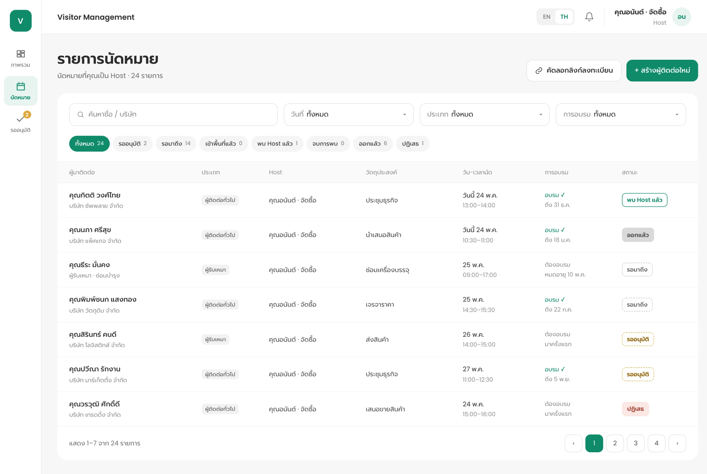
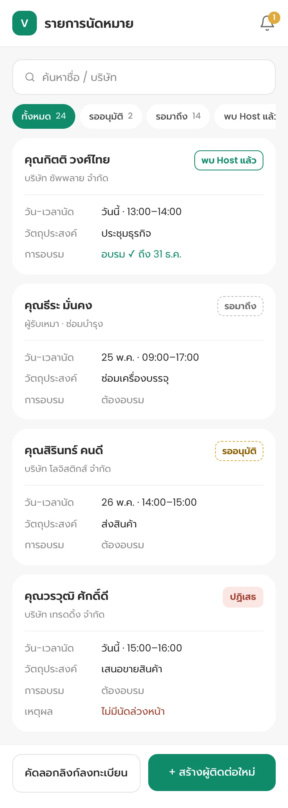

S01 · Desktop + Mobile
ลงทะเบียน — จุดเริ่มต้นของข้อมูลผู้มาติดต่อ
- เริ่มได้ 2 ทาง: Host "สร้างผู้ติดต่อใหม่" หรือ "คัดลอกลิงก์ลงทะเบียน" ส่งให้ Visitor กรอกเอง
- ทั้ง 2 ทางได้ข้อมูลรูปแบบเดียวกัน
UX · ไม่ต้องกรอกแทนทุกราย
Host ส่งลิงก์ให้ Visitor กรอกข้อมูลเองได้

